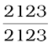
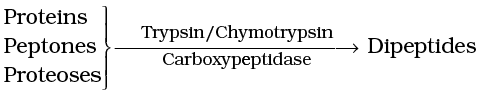

Chapter 16
Digestion and Absorption
Digestion and Absorption

Chapter 16
Digestion and Absorption
Chapter 17
Breathing and Exchange
of Gases
Chapter 18
Body Fluids and Circulation
Chapter 19
Excretory Products and their Elimination
Chapter 20
Locomotion and Movement
Chapter 21
Neural Control and Coordination
Chapter 22
Chemical Coordination and Integration
The reductionist approach to study of life forms resulted in increasing use of physico-chemical concepts and techniques. Majority of these studies employed either surviving tissue model or straightaway cell-free systems. An explosion of knowledge resulted in molecular biology. Molecular physiology became almost synonymous with biochemistry and biophysics. However, it is now being increasingly realised that neither a purely organismic approach nor a purely reductionistic molecular approach would reveal the truth about biological processes or living phenomena. Systems biology makes us believe that all living phenomena are emergent properties due to interaction among components of the system under study. Regulatory network of molecules, supra molecular assemblies, cells, tissues, organisms and indeed, populations and communities, each create emergent properties. In the chapters under this unit, major human physiological processes like digestion, exchange of gases, blood circulation, locomotion and movement are described in cellular and molecular terms. The last two chapters point to the coordination and regulation of body events at the organismic level.
Alfonso Corti
(1822 – 1888)
Alfonso Corti, Italian anatomist, was born in 1822. Corti began his scientific career studying the cardiovascular systems of reptiles. Later, he turned his attention to the mammalian auditory system. In 1851, he published a paper describing a structure located on the basilar membrane of the cochlea containing hair cells that convert sound vibrations into nerve impulses, the organ of Corti. He died in the year 1888.
16.1 Digestive System
16.2 Digestion of Food
16.3 Absorption of Digested Products
16.4 Disorders of Digestive System
Food is one of the basic requirements of all living organisms. The major components of our food are carbohydrates, proteins and fats. Vitamins and minerals are also required in small quantities. Food provides energy and organic materials for growth and repair of tissues. The water we take in, plays an important role in metabolic processes and also prevents dehydration of the body. Biomacromolecules in food cannot be utilised by our body in their original form. They have to be broken down and converted into simple substances in the digestive system. This process of conversion of complex food substances to simple absorbable forms is called digestion and is carried out by our digestive system by mechanical and biochemical methods. General organisation of the human digestive system is shown in Figure 16.1.
16.1 Digestive System
The human digestive system consists of the alimentary canal and the associated glands.
16.1.1 Alimentary Canal
The alimentary canal begins with an anterior opening – the mouth, and it opens out posteriorly through the anus. The mouth leads to the buccal cavity or oral cavity. The oral cavity has a number of teeth and a muscular tongue. Each tooth is embedded in a socket of jaw bone (Figure16.2). This type of attachment is called thecodont. Majority of mammals including human being forms two sets of teeth during their life, a set of
Figure 16.1 The human digestive system
temporary milk or deciduous teeth replaced by a set of permanent or adult teeth. This type of dentition is called diphyodont. An adult human has 32 permanent teeth which are of four different types (Heterodont dentition), namely, incisors (I), canine (C), premolars (PM) and molars (M). Arrangement of teeth in each half of the upper and lower jaw in the order I, C, PM, M is represented by a dental formula which in human
is . The hard chewing surface of the teeth, made up of enamel, helps in the mastication of food. The tongue is a freely movable muscular organ attached to the floor of the oral cavity by the frenulum. The upper surface of the tongue has small projections called papillae, some of which bear taste buds.
The oral cavity leads into a short pharynx which serves as a common passage for food and air. The oesophagus and the trachea (wind pipe) open into the pharynx. A cartilaginous flap called epiglottis prevents the entry of food into the glottis – opening of the wind pipe – during swallowing. The oesophagus is a thin, long tube which extends posteriorly passing through the neck, thorax and diaphragm and leads to a ‘J’ shaped bag like structure called stomach. A muscular sphincter (gastro-oesophageal) regulates the opening of oesophagus into the stomach. The stomach, located in the upper left portion of the abdominal cavity, has three major parts – a cardiac portion into which the oesophagus opens, a fundic region and a pyloric portion which opens into the first part of small intestine (Figure 16.3). Small intestine is distinguishable into three regions, a ‘C’ shaped duodenum, a long coiled middle portion jejunum and a highly coiled ileum. The opening of the stomach into the duodenum is guarded by the pyloric sphincter. Ileum opens into the large intestine. It consists of caecum, colon and rectum. Caecum is a small blind sac which hosts some symbiotic micro-organisms. A narrow finger-like tubular projection, the vermiform appendix which is a vestigial organ, arises from the caecum. The caecum opens into the colon. The colon is divided into three parts – an ascending, a transverse and a descending part. The descending part opens into the rectum which opens out through the anus.
Figure 16.3 Anatomical regions of human stomach
The wall of alimentary canal from oesophagus to rectum possesses four layers (Figure 16.4) namely serosa, muscularis, sub-mucosa and mucosa. Serosa is the outermost layer and is made up of a thin mesothelium (epithelium of visceral organs) with some connective tissues. Muscularis is formed by smooth muscles usually arranged into an inner circular and an outer longitudinal layer. An oblique muscle layer may be present in some regions. The sub-mucosal layer is formed of loose

Figure 16.4 Diagrammatic representation of transverse section of gut
connective tissues containing nerves, blood and lymph vessels. In duodenum, glands are also present in sub-mucosa. The innermost layer lining the lumen of the alimentary canal is the mucosa. This layer forms irregular folds (rugae) in the stomach and small finger-like foldings called villi in the small intestine (Figure 16.5). The cells lining the villi produce numerous microscopic projections called microvilli giving a brush border appearance. These modifications increase the surface area enormously. Villi are supplied with a network of capillaries and a large lymph vessel called the lacteal. Mucosal epithelium has goblet cells which secrete mucus that help in lubrication. Mucosa also forms glands in the stomach (gastric glands) and crypts in between the bases of villi in the intestine (crypts of Lieberkuhn). All the four layers show modifications in different parts of the alimentary canal.
Figure 16.5 A section of small intestinal mucosa showing villi
16.1.2 Digestive Glands
The digestive glands associated with the alimentary canal include the salivary glands, the liver and the pancreas.
Saliva is mainly produced by three pairs of salivary glands, the parotids (cheek), the sub-maxillary/sub-mandibular (lower jaw) and the sub- linguals (below the tongue). These glands situated just outside the buccal cavity secrete salivary juice into the buccal cavity.
Liver is the largest gland of the body weighing about 1.2 to 1.5 kg in an adult human. It is situated in the abdominal cavity, just below the diaphragm and has two lobes. The hepatic lobules are the structural and functional units of liver containing hepatic cells arranged in the form of cords. Each lobule is covered by a thin connective tissue sheath called the Glisson’s capsule. The bile secreted by the hepatic cells passes through the hepatic ducts and is stored and concentrated in a thin muscular sac called the gall bladder. The duct of gall bladder (cystic duct) along with the hepatic duct from the liver forms the common bile duct (Figure 16.6). The bile duct and the pancreatic duct open together into the duodenum as the common hepato-pancreatic duct which is guarded by a sphincter called the sphincter of Oddi.
Figure 16.6 The duct systems of liver, gall bladder and pancreas
The pancreas is a compound (both exocrine and endocrine) elongated organ situated between the limbs of the ‘U’ shaped duodenum. The exocrine portion secretes an alkaline pancreatic juice containing enzymes and the endocrine portion secretes hormones, insulin and glucagon.
16.2 Digestion of Food
The process of digestion is accomplished by mechanical and chemical processes.
The buccal cavity performs two major functions, mastication of food and facilitation of swallowing. The teeth and the tongue with the help of saliva masticate and mix up the food thoroughly. Mucus in saliva helps in lubricating and adhering the masticated food particles into a bolus. The bolus is then conveyed into the pharynx and then into the oesophagus by swallowing or deglutition. The bolus further passes down through the oesophagus by successive waves of muscular contractions called peristalsis. The gastro-oesophageal sphincter controls the passage of food into the stomach.The saliva secreted into the oral cavity contains electrolytes and enzymes, salivary amylase and lysozyme. The chemical process of digestion is initiated in the oral cavity by the hydrolytic action of the carbohydrate splitting enzyme, the salivary amylase. About 30 per cent of starch is hydrolysed here by this enzyme (optimum pH 6.8) into a disaccharide – maltose. Lysozyme present in saliva acts as an antibacterial agent that prevents infections.
The mucosa of stomach has gastric glands. Gastric glands have three major types of cells namely -
(i) mucus neck cells which secrete mucus;
(ii) peptic or chief cells which secrete the proenzyme pepsinogen; and
(iii) parietal or oxyntic cells which secrete HCl and intrinsic factor (factor essential for absorption of vitamin B12).
The stomach stores the food for 4-5 hours. The food mixes thoroughly with the acidic gastric juice of the stomach by the churning movements of its muscular wall and is called the chyme. The proenzyme pepsinogen, on exposure to hydrochloric acid gets converted into the active enzyme pepsin, the proteolytic enzyme of the stomach. Pepsin converts proteins into proteoses and peptones (peptides). The mucus and bicarbonates present in the gastric juice play an important role in lubrication and protection of the mucosal epithelium from excoriation by the highly concentrated hydrochloric acid. HCl provides the acidic pH (pH 1.8) optimal for pepsins. Rennin is a proteolytic enzyme found in gastric juice of infants which helps in the digestion of milk proteins. Small amounts of lipases are also secreted by gastric glands.
Various types of movements are generated by the muscularis layer of the small intestine. These movements help in a thorough mixing up of the food with various secretions in the intestine and thereby facilitate digestion. The bile, pancreatic juice and the intestinal juice are the secretions released into the small intestine. Pancreatic juice and bile are released through the hepato-pancreatic duct. The pancreatic juice contains inactive enzymes – trypsinogen, chymotrypsinogen, procarboxypeptidases, amylases, lipases and nucleases. Trypsinogen is activated by an enzyme, enterokinase, secreted by the intestinal mucosa into active trypsin, which in turn activates the other enzymes in the pancreatic juice. The bile released into the duodenum contains bile pigments (bilirubin and bili-verdin), bile salts, cholesterol and phospholipids but no enzymes. Bile helps in emulsification of fats, i.e., breaking down of the fats into very small micelles. Bile also activates lipases.
The intestinal mucosal epithelium has goblet cells which secrete mucus. The secretions of the brush border cells of the mucosa alongwith the secretions of the goblet cells constitute the intestinal juice or succus entericus. This juice contains a variety of enzymes like disaccharidases (e.g., maltase), dipeptidases, lipases, nucleosidases, etc. The mucus alongwith the bicarbonates from the pancreas protects the intestinal mucosa from acid as well as provide an alkaline medium (pH 7.8) for enzymatic activities. Sub-mucosal glands (Brunner’s glands) also help in this.
Proteins, proteoses and peptones (partially hydrolysed proteins) in the chyme reaching the intestine are acted upon by the proteolytic enzymes of pancreatic juice as given below:

Carbohydrates in the chyme are hydrolysed by pancreatic amylase into disaccharides.
Fats are broken down by lipases with the help of bile into di-and monoglycerides.
Nucleases in the pancreatic juice acts on nucleic acids to form nucleotides and nucleosides
The enzymes in the succus entericus act on the end products of the above reactions to form the respective simple absorbable forms. These final steps in digestion occur very close to the mucosal epithelial cells of the intestine.
The breakdown of biomacromolecules mentioned above occurs in the duodenum region of the small intestine. The simple substances thus formed are absorbed in the jejunum and ileum regions of the small intestine. The undigested and unabsorbed substances are passed on to the large intestine.
No significant digestive activity occurs in the large intestine. The functions of large intestine are:
(i) absorption of some water, minerals and certain drugs;
(ii) secretion of mucus which helps in adhering the waste (undigested) particles together and lubricating it for an easy passage.
The undigested, unabsorbed substances called faeces enters into the caecum of the large intestine through ileo-caecal valve, which prevents the back flow of the faecal matter. It is temporarily stored in the rectum till defaecation.
The activities of the gastro-intestinal tract are under neural and hormonal control for proper coordination of different parts. The sight, smell and/or the presence of food in the oral cavity can stimulate the secretion of saliva. Gastric and intestinal secretions are also, similarly, stimulated by neural signals. The muscular activities of different parts of the alimentary canal can also be moderated by neural mechanisms, both local and through CNS. Hormonal control of the secretion of digestive juices is carried out by local hormones produced by the gastric and intestinal mucosa.
16.3 Absorption of Digested Products
Absorption is the process by which the end products of digestion pass through the intestinal mucosa into the blood or lymph. It is carried out by passive, active or facilitated transport mechanisms. Small amounts of monosaccharides like glucose, amino acids and some electrolytes like chloride ions are generally absorbed by simple diffusion. The passage of these substances into the blood depends upon the concentration gradients. However, some substances like glucose and amino acids are absorbed with the help of carrier proteins. This mechanism is called the facilitated transport.
Transport of water depends upon the osmotic gradient. Active transport occurs against the concentration gradient and hence requires energy. Various nutrients like amino acids, monosaccharides like glucose, electrolytes like Na+ are absorbed into the blood by this mechanism.
Fatty acids and glycerol being insoluble, cannot be absorbed into the blood. They are first incorporated into small droplets called micelles which move into the intestinal mucosa. They are re-formed into very small protein coated fat globules called the chylomicrons which are transported into the lymph vessels (lacteals) in the villi. These lymph vessels ultimately release the absorbed substances into the blood stream.
Absorption of substances takes place in different parts of the alimentary canal, like mouth, stomach, small intestine and large intestine. However, maximum absorption occurs in the small intestine. A summary of absorption (sites of absorption and substances absorbed) is given in
Table 16.1.
Table 16.1 The Summary of Absorption in Different Parts of Digestive System
| Mouth | Stomach | Small Intestine | Large Intestine |
| Certain drugs coming in contact with the mucosa of mouth and lower side of the tongue are absorbed into the blood capillaries lining them. | Absorption of water, simple sugars, and alcohol etc. takes place. | Principal organ for absorption of nutrients. The digestion is completed here and the final products of digestion such as glucose, fructose, fatty acids, glycerol and amino acids are absorbed through the mucosa into the blood stream and lymph. | Absorption of water, some minerals and drugs takes place. |
The absorbed substances finally reach the tissues which utilise them for their activities. This process is called assimilation.
The digestive wastes, solidified into coherent faeces in the rectum initiate a neural reflex causing an urge or desire for its removal. The egestion of faeces to the outside through the anal opening (defaecation) is a voluntary process and is carried out by a mass peristaltic movement.
16.4 Disorders of Digestive System
The inflammation of the intestinal tract is the most common ailment due to bacterial or viral infections. The infections are also caused by the parasites of the intestine like tapeworm, roundworm, threadworm, hookworm, pin worm, etc.
Jaundice: The liver is affected, skin and eyes turn yellow due to the deposit of bile pigments.
Vomiting: It is the ejection of stomach contents through the mouth. This reflex action is controlled by the vomit centre in the medulla. A feeling of nausea precedes vomiting.
Diarrhoea: The abnormal frequency of bowel movement and increased liquidity of the faecal discharge is known as diarrhoea. It reduces the absorption of food.
Constipation: In constipation, the faeces are retained within the rectum as the bowel movements occur irregularly.
Indigestion: In this condition, the food is not properly digested leading to a feeling of fullness. The causes of indigestion are inadequate enzyme secretion, anxiety, food poisoning, over eating, and spicy food.
Summary
The digestive system of humans consists of an alimentary canal and associated digestive glands. The alimentary canal consists of the mouth, buccal cavity, pharynx, oesophagus, stomach, small intestine, large intestine, rectum and the anus. The accessory digestive glands include the salivary glands, the liver (with gall bladder) and the pancreas. Inside the mouth the teeth masticates the food, the tongue tastes the food and manipulates it for proper mastication by mixing with the saliva. Saliva contains a starch digestive enzyme, salivary amylase that digests the starch and converts it into maltose (disaccharide). The food then passes into the pharynx and enters the oesophagus in the form of bolus, which is further carried down through the oesophagus by peristalsis into the stomach. In stomach mainly protein digestion takes place. Absorption of simple sugars, alcohol and medicines also takes place in the stomach.
The chyme (food) enters into the duodenum portion of the small intestine and is acted on by the pancreatic juice, bile and finally by the enzymes in the succus entericus, so that the digestion of carbohydrates, proteins and fats is completed. The food then enters into the jejunum and ileum portions of the small intestine. Carbohydrates are digested and converted into monosaccharides like glucose. Proteins are finally broken down into amino acids. The fats are converted to fatty acids and glycerol. The digested end products are absorbed into the body through the epithelial lining of the intestinal villi. The undigested food (faeces) enters into the caecum of the large intestine through ileo-caecal valve, which prevents the back flow of the faecal matter. Most of the water is absorbed in the large intestine. The undigested food becomes semi-solid in nature and then enters into the rectum, anal canal and is finally egested out through the anus.
Exercises
1. Choose the correct answer among the following :
(a) Gastric juice contains
(i) pepsin, lipase and rennin
(ii) trypsin, lipase and rennin
(iii) trypsin, pepsin and lipase
(iv) trypsin, pepsin and renin
(b) Succus entericus is the name given to
(i) a junction between ileum and large intestine
(ii) intestinal juice
(iii) swelling in the gut
(iv) appendix
2. Match column I with column II
Column I Column II
(a) Bilirubin and biliverdin (i) Parotid
(b) Hydrolysis of starch (ii) Bile
(c) Digestion of fat (iii) Lipases
(d) Salivary gland (iv) Amylases
3. Answer briefly:
(a) Why are villi present in the intestine and not in the stomach?
(b) How does pepsinogen change into its active form?
(c) What are the basic layers of the wall of alimentary canal?
(d) How does bile help in the digestion of fats?
4. State the role of pancreatic juice in digestion of proteins.
5. Describe the process of digestion of protein in stomach.
6. Give the dental formula of human beings.
7. Bile juice contains no digestive enzymes, yet it is important for digestion. Why?
8. Describe the digestive role of chymotrypsin. Which two other digestive enzymes of the same category are secreted by its source gland?
9. How are polysaccharides and disaccharides digested?
10. What would happen if HCl were not secreted in the stomach?
11. How does butter in your food get digested and absorbed in the body?
12. Discuss the main steps in the digestion of proteins as the food passes through different parts of the alimentary canal.
13. Explain the term thecodont and diphyodont.
14. Name different types of teeth and their number in an adult human.
15. What are the functions of liver?